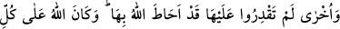

– Evet, dedi.
Peygamberimiz:
– Seni bunu yapmaya sevkeden nedir?
Kadın:
– Babamı, amcamı, kocamı öldürdün. Ve kavmimden bir çok ganimete nâil oldun.
Dedim ki, eğer bir kralsa kurtuluruz. Yok bir peygamberse, haber verir. Rasûl-i Ekrem
(s.a.), bu kadını affetti. Bişr (r.a.) vefat edince, Rasûlullah (s.a.)’ın emri üzerine bu
kadın öldürüldü ve idam edildi.
Eğer onun mucize sofrasından yemek istersen,
Hazırlanmış kuzu kebabının hikâyesini dinle.
İhyâ’da der ki: Rasûlullah (s.a.) zehirli eti yedi. Onunla beraber yiyen bir kimse vefat
etti. Fakat Efendimiz (s.a.) o olaydan sonra dört yıl daha yaşadı.
Şeyh Üftâde (k.s.) der ki: Ömer (r.a.)’e, Kayser’den dönüşünde zehirin te’sir
etmemesi, içtiği zaman bir beşer olarak değil, hakikî hâli üzere içtiği içindir. Nebî
(s.a.)’e te’sir etmesi ise Rasûlullah (s.a.)’ın o anda beşeriyet haline geçmiş
olmasındandı. Böyle olduğu halde bile zehir tam mânâsıyla te’sir etmemiştir. Şu kadar
var ki, Rasûlullah’ın beşeriyet haline geçmesi dahi ruh derecesindedir. Ki bu da en
normal mertebedir. On iki yıl geçtiği halde zehir öldürmemişti. Fakat, ne zaman ki,
Efendimiz (s.a.) sekerât-ı mevt durumuna geldi, mertebelerin en düşüğüne rücû etti.
Çünkü ölüm beşeriyyete te’sir eder. Efendimiz (s.a.), bu mertebeye gelince zehir
te’sirini gösterdi. Resûl-i Ekrem (s.a.) şehid olarak bu dünyadan ayrıldı. Bu haliyle
Efendimiz nübüvvet, risalet, sıddîkiyet ve şehâdet olmak üzere bütün mertebelere nâil
olmuştu.
Bu konuda fakirin (Bursevî) kanaatine gelince: On iki yıl ifâdesi ve devamı hakkında
Muhammediye adlı eserin sahibi der ki: Bu ifâde İhyâ’daki ifâdeyle aynı değil. Doğru
olan da İhyâ’daki bilgidir. Çünkü zehirlenme hâdisesi Hayber’de olmuştur. Hayber fethi
ise Hicrî yedinci senededir. Bunun dışında da bir yorum yapmak zordur.
Hz. Ömer (r.a.)’in halifelik dönemi başlayınca Hayber ahâlisi hainlik yaptılar. Bunun
üzerine Ömer (r.a.) Fedek yahudîlerini ve Necrân hristiyanlarını sürdü. Çünkü
Efendimiz (s.a.) “Arap yarımadasında iki din kalmayacaktır”[127] buyurmuşlardı. Arap
yarımadası: Hint denizi, Akdeniz, Dicle ve Fırat’la çevrili yerdir. Veya uzunlamasına
Adn ile Suriye çevresi, genişliğine ise Cidde ile Irak ovası arasında kalan yerdir.
Kâmus’ta bu şekilde geçer.